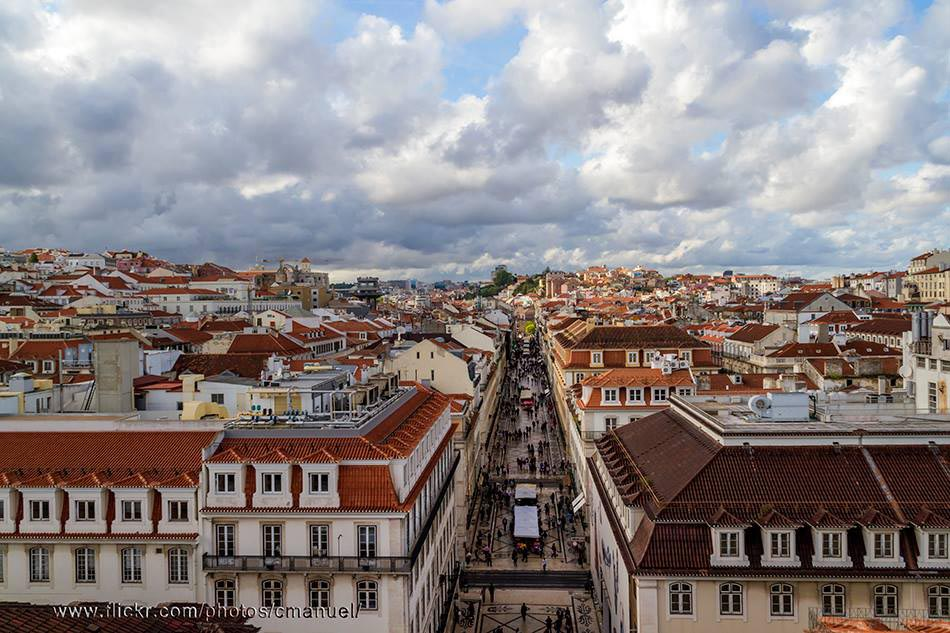
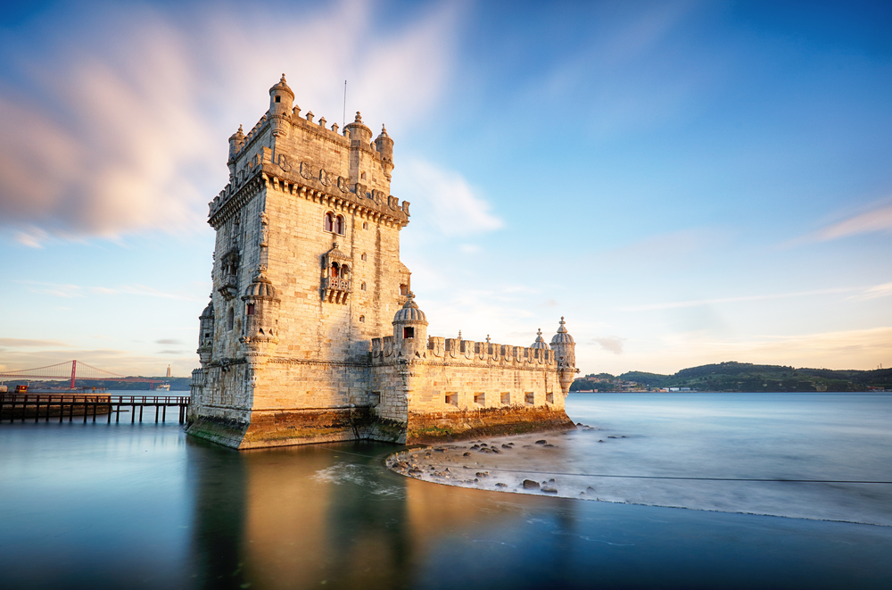
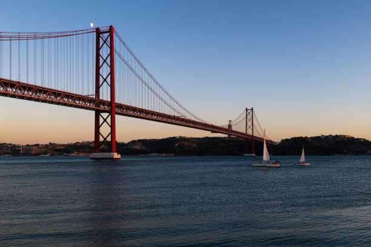

Lisboa
Lisboa é a capital de Portugal e uma cidade marcada pela sua história, cultura, arquitetura e ligação ao rio Tejo.
Lisboa é a capital de Portugal e uma cidade marcada pela sua história, cultura, arquitetura e ligação ao rio Tejo.

A cidade combina edifícios históricos, bairros tradicionais e diferentes estilos arquitetónicos.

A Torre de Belém é um dos monumentos mais conhecidos de Lisboa e um dos símbolos da cidade.
| População | 545 923 hab. (2021) |
|---|---|
| Densidade | 5 457 hab/km² |
| Área | 100,05 km² |
|---|---|
| Região | Área Metropolitana de Lisboa |

O Tejo é um dos elementos mais importantes da paisagem e da história de Lisboa.